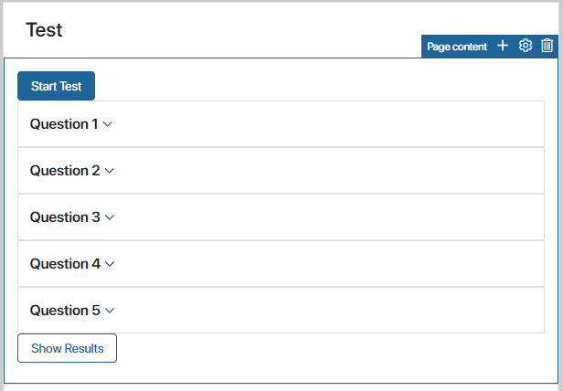
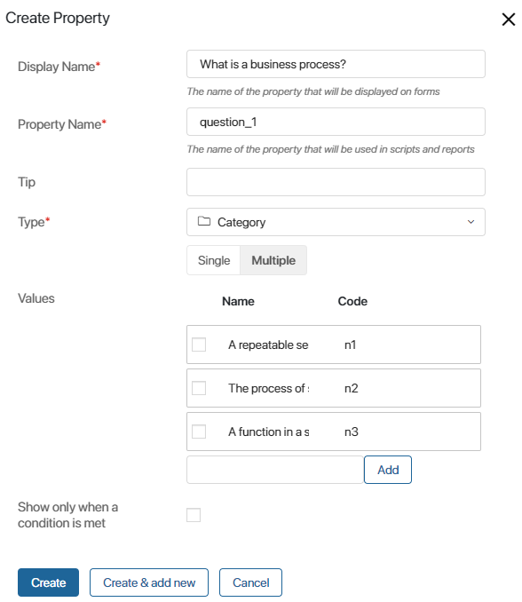
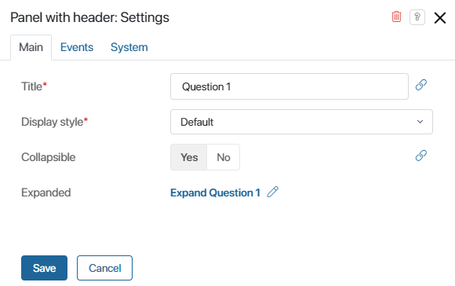
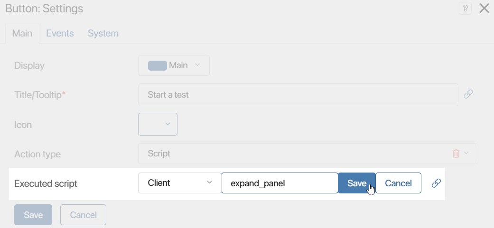
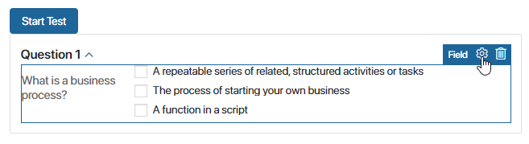
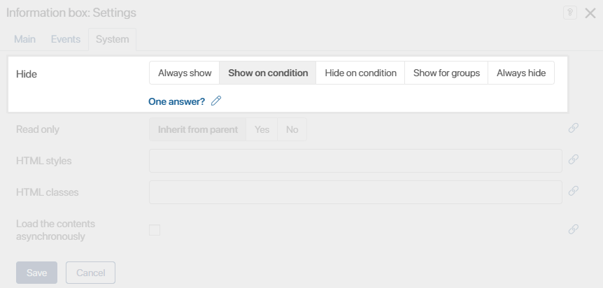
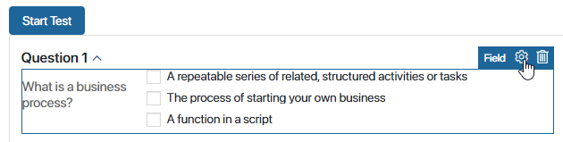
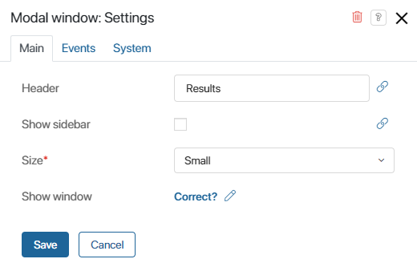

Widgets are a convenient tool for setting up dynamic forms, for instance, if some information needs to be displayed when certain conditions are met.
Let’s consider an example of how you can use scripts in widgets. We’ll create a page containing a test with several questions. The page will include expanding panels containing the questions, an information box with a warning, and a modal window displaying the test results.

Create the test questions
First, create multiple choice questions for the test:
- Open the page and go to the interface designer.
- On the Context tab, create a Category type variable and set the following parameters:
- Display Name*. Enter a question to be displayed on the page.
- Property Name*. Change the automatically generated property name to
question_1. - Type*. Select Category and choose the Multiple option.
- Values. Enter possible answers for the question. Change their codes to
n1,n2, andn3and click Create.

- Create a few more questions in the same way.
Expanding panel
Now that you’ve created the test questions, determine how they are going to be shown on the page. Let’s make it so that the questions are collapsed by default, but as soon as the user clicks Start Test, the first question panel expands. To do that:
- In the interface designer, on the Context tab, create a variable of the Yes/No switch type called Expand Question 1
(expand_question_1). - Add the Panel with header widget to the modeling canvas.
- In the window that opens, set the following parameters:
- Title*. Enter the panel’s name, Question 1.
- Collapsible. Select Yes.
- Expanded. Specify the Expand Question 1 variable that you created in step 1. With this variable in the condition, the panel will expand when the user clicks the button that is going to be added to the page.

- Click Save.
- Add the Button widget to the modeling canvas.
- In the settings window that opens, set the following parameters:
- Title/Tooltip*. Enter the button’s name, Start Test.
- Executed script. Add a script that will change the value of the Expand Question 1 variable
(expand_question_1)totrue. To do that, click Create, enter the function name: expand_panel, click Save, and then select Open.

On the Scripts tab that opens, write the following script in the created function:
async function expand_panel(): Promise<void>{
Context.data.expand_question_1 = true
}
- Save the settings.
- Inside the Panel with header widget, place the Category type variable with the first question that you created earlier. To do that, on the right-side panel of the interface designer, switch to the Properties tab and drag the field to the widget. On the page, the property will be displayed as the Field widget.

- Add as many panels to the modeling canvas as you have questions. Set names for each panel. In the Collapsible field, select Yes, in the Expanded field, No. Place the properties with the questions into the panels.
- Save and publish the changes.
Now all the questions are collapsed when the page opens. When the user clicks Start Test, the first question automatically expands.
Information box
In the test, there is only one possible answer for each question. If the user selects several answers, an Information box with a warning should be displayed. The box disappears when the user hovers the mouse over it.
To set up the information box, do the following:
- In the interface designer, on the Context tab, create a variable of the Yes/No switch type called One answer?
(one_answer). - Add the Information box widget to the modeling canvas. In the settings window that opens, in the Hide field, select Show on condition. Then specify the One answer? variable. Whether the information box is shown will depend on the value of this variable.

- The number of answers selected by the user needs to be checked. To set up the checking, do the following:
- Select the Field widget containing the first question and open its settings by clicking the gear icon:

- Go to the Events tab and add a script that will check the number of selected answers and change the value of the One answer? variable. To do that, click Create, then Open.
- The Scripts tab in the interface designer will open. Add a script that will define the value of the One answer?
(one_answer)variable, for example:
async function checkTest(): Promise<void> {
if (Context.data.question_1 && Context.data.question_1.length > 1) {
Context.data.one_answer = true
} else {
Context.data.one_answer = false;
}
}
- In the settings of the Information box widget, go to the Events tab and add a script to the On mouse enter handler. This script should change the value of the One answer?
(one_answer)variable tofalse:
async function closeInformationBox(): Promise<void> {
Context.data.one_answer = false
}
- Save and publish the changes.
Pop-up window
When the user finishes the test, they click the Check Results button. After that, the page will show a pop‑up window with the test results.
To configure the pop-up window, do the following:
- In the interface designer, on the Context tab, create a variable of the Yes/No switch type called Correct?
(correct). It will store the test results. - Add the Modal window widget to the modeling canvas.
- In the widget’s settings, in the Show window field, specify the variable created in step 1. Whether the modal window is shown will depend on the value of this variable.

- Add the Button widget to the modeling canvas.
- In the button’s settings, in the On click handler, add a script that will change the value of the Correct?
(correct)variable totrue, for example:
async function resultTest(): Promise<void> {
if (Context.data.question_1 && Context.data.question_1.length == 1) {
for (let i of Context.data.question_1) {
if (i.code == "n1") {
Context.data.correct = true;
}
else {
Context.data.correct = false;
}
}
}
else {
Context.data.correct = false;
}
}
- Save and publish the changes.